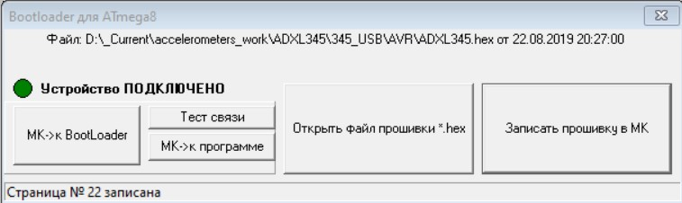
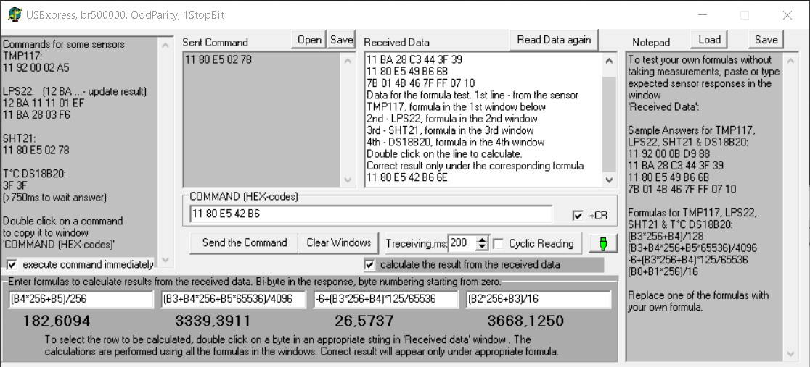
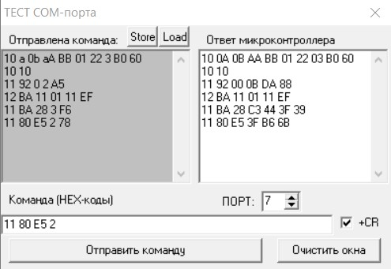

Программное
обеспечение I2C SPI 1-Wire USB адаптера
Драйверы USB
Для
подключения к USB в
адаптере используется микросхема USB-моста CP2102N производства Silicon
Labs. Компания предлагает последние версии драйверов на своем
сайте.
Драйверы VCP
(Virtual COM-port) для разных
операционных систем (Windows,
WinCE, Mac, Linux)
обеспечивают обращение компьютера, смартфона или контроллера
с USB хостом через соответствующее приложение к адаптеру через
виртуальный COM-порт.
Драйверы
прямого доступа USBxpress доступны для устройств с операционными
системами Windows, WinCE.
Для Windows можно воспользоваться архивами с драйверами
прямого доступа и с драйверами виртуального
COM-порта.
Режим
работы микросхемы USB-моста CP2102 - через виртуальный COM-порт или с
прямым доступом - определяется записанным в эту микросхему значением
USB параметра PID (Product ID).
PID=0xEA61
- с этим значением параметра поставляется адаптер, его работа возможна
под Windows
и WinCE;
микросхема работает
в режиме прямого доступа к функциям USB-моста; на хост-устройстве
должен быть установлен драйвер
прямого доступа.
PID=0xEA60
- приложение обращается к микросхеме USB-моста как к виртуальному COM-порту,
на хост-устройстве, к которому подключается USB-мост, должен
быть установлен драйвер
VCP; этот режим необходим для работы адаптера под
операционными системами Linux, Mac - для них доступны только драйверы
VCP. Этот
режим также возможен под Windows и WinCE - разработчик может им
воспользоваться, если предпочитает работу с виртуальным COM-портом
прямому доступу к функциям USB-моста.
Для изменения
значений параметров USB
(VID, PID,
Product String, Serial Number,...) в микросхеме USB-моста CP2102N производитель предлагает Simplicity
Studio.
В составе I2C
SPI
1-Wire USB адаптера
микросхема CP2102N поставляется с PID=0xEA61.
Если в CP2102N необходимо изменить PID на 0xEA60, следует
предварительно считать параметры, уже записанные при
изготовлении
адаптера (кнопка "Import From Device"), затем изменить PID на 0xEA60 и
нажать кнопку "Program To Device" для сохранения изменений.
Внимание:
загрузка в
микросхему CP2102N параметров,
предлагаемых Simplicity
Studio по умолчанию,
недопустима:
адаптер перестанет работать.
Для восстановления работы адаптера понадобится ввести корректные
параметры.
Чтобы
операционная система и работающие в ней приложения, в том числе
Simplicity Studio, обнаружили ваше устройство, на
компьютере уже должен быть установлен драйвер с параметрами VID, PID, Product String,
прописанными в микросхеме USB моста, который вы подключаете.
Если вы изменили параметры VID,
PID, Product String в этих приложениях, а драйверы с новыми значениями
этих параметров ещё не установлены, операционная система, а значит, и
эти приложения не обнаружат вашего
устройства после внесенных изменений.
Замечание:
- Windows10
жёстко проверяет устройства на соответствие VID, PID, Product String -
они должны быть зарегистрированы производителем, а их изменение требует
процедуры регистрации на usb.org,
незарегистрированные устройства блокируются, а процедура их
разблокировки в Windows10 требует довольно хлопотных изменений. Для
микросхемы CP2102 эти параметры должны быть следующими: VID=0x10C4;
PID=0xEA60 или PID=0xEA61
- Windows7
допускала работу устройств с незарегистрированными значениями
параметров, но требовала некоторой процедуры для разрешения работы
таких устройств.
- Windows
Vista, XP, 98 позволяли произвольно изменять эти параметры, можно было
подключать несколько устройств с USB-мостами CP2102, при этом,
например, первому устройству с таким мостом можно было присвоить
PID=0xEA01, второму PID=0xEA02. Конечно, была вероятность, что при
таком произволе кто-то зарегистрирует своё устройство с используемыми
вами VID=0x10C4
и PID=0xEA01, а
ваш заказчик приобретет такое
устройство и попытается
использовать его вместе с вашим.
Bootloader
адаптера с микроконтроллерами ATmega8 и megaAVR 0-series
В
адаптерах с микроконтроллерами ATmega8 и микроконтроллерами megaAVR
0-series прошивка содержит не
только
программу работы с интерфейсами I2C, SPI и 1-Wire, но и
программу-загрузчик (bootloader).
В адаптерах с микроконтроллерами
STM8S003 программы-загрузчика нет - эти микроконтроллеры не имеют
аппаратной поддержки boot-сектора.
В
микроконтроллерах ATmega8 и megaAVR 0-series в памяти программ можно
выделить загрузочную
область (boot) и область приложения, для этого требуется программатор.
В
области приложения размещается рабочая программа микроконтроллера - в
микроконтроллере адаптера это программа, обеспечивающая работу с
интерфейсами I2C, SPI и 1-Wire, а также связь с компьютером по USB.
В
загрузочной области размещена программа, позволяющая загрузить
обновлённую прошивку в область приложения памяти программ
микроконтроллера без программатора.
В памяти
микроконтроллеров
ATmega8 и megaAVR 0-series адаптера программа-загрузчик и универсальная
программа уже
прошиты. В
памяти STM8S003 прошита только универсальная программа.
При обычном подключении к USB, микроконтроллер адаптера выполняет
рабочую программу.
Для
перехода в режим загрузки на отключенном микроконтроллере нужно
замкнуть контакты "O" и "_|_" и, не размыкая контактов, подключить
адаптер к USB.
В поставляемой рабочей программе микроконтроллера
предусмотрена команда перехода из рабочей программы в режим загрузки
без замыкания контактов.
Чтобы
разработанная вами рабочая программа обеспечивала
программный переход к режиму загрузки, она должна поддерживать такую же
команду, а микроконтроллер должен
использовать скорость передачи 500000 бод. Скорость передачи
500000 бод используется во всех поставляемых программах, в том числе в
компьютерном приложении Bootloader.
Компьютерное
приложение Bootloader обеспечивает загрузку обновлённой
прошивки,
которая должна храниться в формате hex. <Разместить
ссылки>

При подключенном к USB микроконтроллере, нажатие кнопки "МК->к
Bootloader" переводит микроконтроллер (МК) в режим загрузки.
Откройте файл обновлённой прошивки (кнопка "Открыть файл прошивки
*.hex"), затем нажмите кнопку
"Записать прошивку в МК".
По мере загрузки прошивки на панели статуса отображается текущий номер
страницы программы, уже записанной в память микроконтроллера.
Нажатие
кнопки "МК->к программе" переводит микроконтроллер в режим
выполнения программы, а приложение Bootloader отключает - вы можете
запустить какое-либо приложение для управления адаптером, а приложение
Bootloader не закрывать. Для повторного выполнения прошивки надо
отключить или закрыть приложение управления адаптером, а в приложении
Bootloader нажать кнопку "МК->к BootLoader". Это удобно при
работе
над программой с тестированием очередной обновлённой прошивки.
Возможна загрузка обновлённой прошивки с помощью программатора - его
можно подключить к контактам SPI интерфейса адаптера:
Контакт
программатора:
_|_
+3,3V MISO
MOSI
SCK RST
контакт адаптера:
_|_ V
O
I
C
МК/конт.29
(выведен на R=10к и конденсатор у 1-го контакта МК, обозначенного на
плате галочкой - к площадкам R и С удобнее паять провод)
При
загрузке через программатор выполняется полное стирание памяти
микроконтроллера, в том числе и загрузочной области, а
программа-загрузчик для микроконтроллера не предоставляется.
То
есть, после использования программатора вы не сможете
пользоваться
нашим загрузчиком в адаптере.
Адаптер: программа
микроконтроллера
Микроконтроллер
адаптера I2C
SPI 1-Wire USB (далее МК) распознаёт и выполняет поступающие по USB
команды. По этим командам МК управляет подключёнными к адаптеру
устройствами, считывает поступающие от них данные и передаёт их по USB
в компьютер.
Параметры
передачи МК:
- информация
передаётся 8-битными словами, сопровождаемыми служебными битами;
- скорость
передачи 500000 бод;
- 1
стоп-бит;
- бит
чётности - Odd (нечётность).
Такие же параметры
должны быть установлены и в компьютерном приложении, под управлением
которого работает адаптер.
Команды
компьютера и ответы МК.
Первым передаётся байт команды, последним - байт контрольной записи CR.
Все значения в командах и ответах однобайтные, это адреса устройств,
адреса регистров, размеры запрашиваемых данных, содержимое регистров.
Замечание. Все
приведённые ниже команды отправляются компьютером адаптеру.
Адаптер обрабатывает
команды и отправляет их в подключенные к адаптеру устройства в
преобразованном виде.
Ответы устройств также
отправляются
адаптером в
компьютер в обработанном виде.
Формат обмена между
адаптером и подключёнными к нему устройствами здесь не рассматривается.
Команды
теста связи и работы с загрузчиком (bootloader).
Эти четыре команды выполняются как с подключёнными к адаптеру
устройствами, так и без них.
Тест
связи с МК, выполняющим рабочую программу.
Команда:
0x10
B[0] ... B[n-1] CR - между байтом команды 0x10 и контрольной
записью может быть до десятка произвольных байт B[0] ... B[n-1]; их
передача необязательна. Достаточно передать байт команды и контрольную
запись: 0x10 0x10.
Ответ:
0x10 B[0] ... B[n-1] CR - ответ МК повторяет принятую
последовательность (эхо
команды).
Контрольная
запись CR определяется как младший байт суммы всех
предыдущих байт
команды:
CR = LowByteOf ( 0x10 + B[0] + ... + B[n-1] ).
Пример расчёта CR в следующем
разделе.
Переход
к программе-загрузчику МК из рабочей программы.
0xBB 0xBB - команда перехода МК к загрузчику. Команда выполняется
рабочей программой МК.
Ответ на команду не предусмотрен.
Тест
связи с МК, выполняющим программу-загрузчик.
0xB7 0xB7 - команда выполняется загрузчиком. На команду 0x10, описанную
выше, загрузчик не отвечает.
0xB7
B[0] B[1] B[2] CR - ответ МК позволяет убедиться в переходе
к загрузчику. Байты B[0], B[1], B[2] и CR вычисляются и передаются
загрузчиком.
Возврат
МК к рабочей программе из программы-загрузчика.
0xBA 0xBA - команда выполняется загрузчиком. Ответ на команду не
предусмотрен.
Чтобы убедиться в переходе МК к рабочей программе, следует выполнить
команду 0x10 0x10.
Команды
интерфейса I2C.
Устройства
с интерфейсом I2C поддерживают аппаратную адресацию. Адрес устройства
записывается в него при производстве, а при обращении к устройству
адаптер должен сначала отправить этот адрес.
Замечание.
Младший разряд адреса I2C устройства определяет направление передачи.
Если разряд в байте адреса сброшен, следующие за ним байты
записываются в I2C устройство.
Если младший разряд в адресе установлен, данные из устройства будут
считываться.
В технических описаниях устройств указываются базовые адреса - со
сброшенными младшими разрядами. Они всегда чётные.
Этот базовый
адрес и используется в командах компьютера и ответах адаптера.
Установку
или сброс младшего разряда адреса выполняет адаптер при
формировании последовательностей для передачи в устройства.
При
однобайтной адресации интерфейса I2C возможно формирование
256-ти
адресов, но так как каждое устройство использует два адреса - для
чтения и
для записи - общее число адресуемых устройств, подключаемых к шине I2C,
не может превышать 128-ми.
Чтение
состояния регистров устройства I2C.
Команда:
0x11 addr_I2C Rg_minNum numRgToRead CR
за байтом команды 0x11 компьютером передаются
байт addr_I2C - адрес опрашиваемого I2C устройства,
байт RgNum_min - наименьший номер регистра из
последовательности опрашиваемых регистров,
байт numRgToRead - число опрашиваемых регистров
и байт CR - контрольная запись.
Ответ адаптера:
0x11 addr_I2C Rg_minNum B[0] ... B[numRgToRead-1] CR
первые 3 байта такие же, как в команде,
B[0] ... B[numRgToRead-1] - принятые адаптером состояния регистров,
байт CR - контрольная запись.
Пример команды и ответа в следующем
разделе.
Запись
в регистры устройства I2C.
Команда:
0x12 addr_I2C Rg_minNum B[0] ... B[n-1] CR
0x12 - команда;
addr_I2C - адрес I2C устройства;
RgNum_min - наименьший номер регистра из последовательности
регистров, в которую производится запись;
B[0] ... B[n-1] - n
байт, которые следует записать в регистры;
CR - контрольная запись.
Ответ адаптера: эхо команды.
Пример команды и ответа в следующем
разделе.
Команды
интерфейса SPI.
В отличие от I2C устройств, адресация при обращении к устройствам
SPI не требуется.
Чтение
состояния регистров устройства SPI.
Команда:
0x21 Rg_minNum numRgToRead CR
0x21- команда чтения содержимого регистров,
RgNum_min - наименьший номер регистра из последовательности
опрашиваемых регистров,
numRgToRead - число опрашиваемых регистров
CR - контрольная запись.
Ответ адаптера:
0x21 Rg_minNum B[0] ... B[numRgToRead-1] CR
первые 3 байта такие же, как в команде,
B[0] ... B[numRgToRead-1] - состояния опрошенных регистров,
байт CR - контрольная запись.
Запись
в регистры устройства SPI.
Команда:
0x22 Rg_minNum B[0] ... B[n-1] CR
0x22 - команда,
RgNum_min - наименьший номер регистра из последовательности
регистров, в которую производится запись,
B[0] ... B[n-1] - n байт, которые следует записать в регистры,
CR - контрольная запись.
Ответ адаптера: эхо команды.
Команды
интерфейса 1-Wire.
Каждое выпускаемое устройство с интерфейсом 1-Wire имеет индивидуальный
64-разрядный адрес.
При подключении к адаптеру одного устройства к нему возможно
безадресное обращение.
Команда:
0x31 n CR - считать n байт из буфера устройства 1-Wire.
Ответ адаптера:
B[0] ... B[n-1] - байты, принятые адаптером.
Команда:
0x32 B[0] CR - отправить байт B[0] устройству 1-Wire.
Ответ не предусмотрен.
Команда:
0x33 0x33 - адаптеру генерировать импульс сброса устройств 1-Wire.
Ответ не предусмотрен.
Команда:
0x34 0x34 - запрос присутствия устройств на линии 1-Wire.
Ответ не предусмотрен.
Датчик
температуры
DS18B20: для него в программе предусмотрена
отдельная команда.
Эта команда вызывает все перечисленные выше команды интерфейса 1-Wire:
0x3F 0x3F - выполнить измерение температуры и передать результат
измерения.
Ответ:
9 байт - содержимое буфера DS18B20.
Байты B[0] и B[1] содержат измеренное датчиком DS18B20
значение.
Для получения результата использовать формулу: T°C = (B[0] +
B[1] * 256 ) / 16.
Пример обращения к
датчику DS18B20 отдельными командами 1-Wire:
0x33 0x33 - генерировать импульс сброса устройств.
0x34 0x34 - запросить присутствие устройств на линии 1-Wire.
0x32 0xCC 0xFE - отправить байт 0xCC устройству. Команда 0xCC датчика
DS18B20: SkipROM. 0xFE - байт контрольной записи.
0x32 0x44 0x76 - отправить 0xCC устройству. Команда 0x44 датчика
DS18B20: измерить температуру.
0x33 0x33 - генерировать импульс сброса устройств.
0x34 0x34 - запросить присутствие устройств на линии 1-Wire.
0x32 0xCC 0xFE - отправить 0xCC устройству. Команда 0xCC датчика
DS18B20: SkipROM.
0x32 0xBE 0xF0 - отправить 0xBE устройству. Команда 0xBE датчика
DS18B20: ReadScratchPad - передать содержимое памяти в буфер.
0x31
0x09 0x3A - считать 9 байт из буфера. Результат измерения температуры
находится в первой паре байт буфера DS18B20, но этот буфер
кольцевой, он содержит 9 байт и все эти байты должны быть считаны.
При
выполнении отдельной команды 0xFF между некоторыми командами из примера
размещаются необходимые задержки. При ручном вводе каждой команды в
окно приложения компьютера задержки не требуются.
Приложение с
прямым доступом
к функциям CP2102N
разместить ссылку на
архив с приложением, его исходники

Для работы приложения на компьютере должен быть установлен драйвер
прямого доступа, Приложение работает с адаптерами, у которых
параметр PID
микросхемы USB-моста 0xEA61.
Скорость передачи (500000 бод), число информационных бит в посылке (8),
число стоп-бит (1) и бит
четности (Odd - нечётность) в
этом приложении и в программе микроконтроллера на плате адаптера должны быть
одинаковыми.
В
окошко "Команда (HEX-коды)" записывается команда как последовательность
16-ричных кодов, разделенных пробелами;
символы, принятые в программировании
для обозначения hex-кодировки, здесь не вводятся, например, вместо кода
0xE5 вводится просто E5.
После
нажатия кнопки "Отправить команду" команда
передается в адаптер и отображается в окне "Отправлена команда:". Если
поступает ответ адаптера в течение времени, установленного в окошке "T
приёма, мс:", этот ответ отображается в окне "Ответ микроконтроллера:".
Байты
ответа, которые компьютер не успеет считать в
течение установленного времени приёма,
сохраняются в буфере (выбрано время
приёма 800мс - чуть больше времени преобразования термодатчика DS18B20
с интерфейсом 1-Wire).
При поступлении следующего ответа, сохранённые в буфере байты будут
отображены в окне перед этим ответом.
Также оставшиеся в буфере байты можно считать,
нажав кнопку "Считать ещё раз".
Микроконтроллер
адаптера и компьютер проверяют
целостность передаваемых сообщений, для этого каждый байт сообщения
сопровождается битом четности, а в конце сообщения передается
контрольная запись (CR). Контрольную запись можно ввести отдельным
байтом
в окошко
"Команда (HEX-коды)", а можно вводить команду без контрольной записи,
установив флажок "+CR" - контрольная запись будет вычислена
автоматически.
Здесь контрольная запись - это байт,
который равен
младшему байту суммы всех байтов команды; байт контрольной записи
размещается в
конце команды.
Например,
для последней строки в окне
"Ответ микроконтроллера:"
контрольная запись: LowByteOf (11 +
80 + E5 + 3F +
B6) =
LowByteOf ( 0x026B) = 0x6B.
Обмен информацией между компьютером и адаптером отображён в окнах "Отправлена команда:" и
"Ответ микроконтроллера:".
К адаптеру по I2C интерфейсу
подключены датчики
температуры
TMP117, давления
LPS22HB и влажности SHT21; по интерфейсу 1-Wire датчик температуры
DS18B20; по интерфейсу SPI MEMS-акселерометр ADXL345 (фото
комплекта - датчик TMP117 на фото отсутствует).
Первой передавалась Команда
1
"10 a 0b aA BB 01 22 3 B0" - тест
связи, на неё адаптер отвечает
такой же последовательностью (эхо команды).
10 - байт
команды 0x10, далее произвольная последовательность байт: a 0b aA BB
01 22 3,
завершаемая байтом контрольной записи B0.
При вводе команды в окне "Команда (HEX-коды)" можно использовать как
прописные, так и строчные 16-ричные символы A...F.
Если значение байта можно представить одним символом (например, b), перед ним можно вставить
лидирующий ноль (0b).
Произвольная последовательность в команде теста связи может
отсутствовать.
Команда 2 "10 10"
- также тест
связи, в ней только байт команды и байт контрольной записи.
Команда 3 "11 92 0 2 A5" -
запрос результата у датчика температуры TMP117:
команда 0x11
- считать состояния регистров устройства с интерфейсом I2C
с адресом 0x92
(уникальный I2C адрес датчик температуры TMP117),
считывание начать с регистра 0x00,
считать 0x02
регистра.
0xA5
- контрольная запись (далее упоминаться не будет).
Ответ: "11 92 00 0B
DA 88" - в начале повторяются первые 3 байта команды, чтобы можно было
интерпретировать ответ (считывалось устройство с адресом 0x92, начиная
с регистра 0x00). Результат считывания размещается между 3-м и
последним байтами - в этом ответе результат представлен 2-мя байтами.
Результат измерения (TMP117 передаёт сначала
старший байт, затем младший) 0x0BDA = 3034, его надо разделить на 128:
T = 3034/128 = 23,703125°C.
Результат вычисления размещается
под окошком с формулой (b3*256+b4)/128.
Результат актуален только под соответствующей формулой
либо после поступления ответа адаптера при установленном
флажке "вычислить результаты при ответе микроконтроллера",
либо
при двойном щелчке мышкой на строке в окне "Ответ микроконтроллера" -
именно для этой строки будут выполнены вычисления, причем по всем
формулам.
Замечание: технические описания устройств,
подключаемых к адаптеру, предоставляют всю необходимую информацию:
адреса
устройств, номера управляющих регистров и регистров с результатами
измерений,
алгоритмы работы - что, в какой последовательности и в какие регистры
устройства надо записывать для определения режима
измерения и
получения результатов.
Команда
4 "12
BA 11 01 11 EF",
её
назначение - обновить результат измерения в регистрах датчика
давления LPS22.
Передача начинается
байтом 0x12 - это команда адаптеру выполнить запись в регистры
подключенного к нему I2C устройства;
далее следует I2C адрес устройства 0xBA - это адреc датчика
давления LPS22,
в регистр 0x11 которого
должен быть записан 0x01
байт,
значение этого байта 0x11.
Ответ адаптера на эту команду - эхо принятой последовательности или код
ошибки, если при приёме команды обнаружены ошибки.
Результаты, вычисленные под окошками с формулами, недействительны.
Команда
5 "11 BA 28 03 F6" -
считать результат измерения датчика давления
LPS22:
0x11 - считывание состояния регистров; 0xBA - I2C
адрес датчика LPS22; начиная с регистра 0x28,
считать состояния 0x03-х регистров.
Ответ: "11 BA 28 C3 44 3F 39". Первые 3 байта
такие же, как в команде; следующие три байта - результат, который LPS22
передаёт от младшего
байта к старшему.
Последовательность переданных LPS22 данных C3 44 3F надо
изменить, чтобы
представить их в 16-ричном коде: 0x003F44C3 = 4146371;
чтобы получить результат в гектопаскалях, его надо разделить на 4096
или сдвинуть вправо на 12 разрядов;
получится 1012,2976 гПа.
Результат вычисления размещается под окошком с формулой
(b3+b4*256+b5*65536)/4096.
Команда 6
"11 80 E5 02 78" -
опрос датчика влажности SHT21. 0x11 - считать состояние регистров
устройства с I2C адресом 0x80, начиная с регистра 0xE5, считать 0x02
регистра.
Ответ:
"11 80 E5 3F B6 6B". Первые 3 байта - как в команде.
Результат 0x3FB6 - SHT21, как и TMP117, передает
сначала
старший, затем младший байт результата: 0x3FB6 = 16310,
относительная влажность воздуха RH = -6 + 16310 * 125 / 65536 =
-6 + 125 *16310/65536 = 25,1088%.
Результат вычисления размещается под
окошком с формулой -6+(b3*256+b4)*125/65536.
Команда 7
"21 80 1 A2" - опрос регистра 0x00 микросхемы акселерометра ADXL345 по
интерфейсу SPI. 0x21 - считать состояние регистра
устройства с SPI интерфейсом; номер регистра 0x00 (особенность
ADXL345: при записи номер регистра передаётся без изменений, при
считывании одного регистра к адресу добавляется 0x80, при считывании
последовательности регистров добавляется 0xC0), считать 0x01
регистр.
Ответ:
"21 80 E5 86". Первые 2 байта - как в команде.
Результат 0xE5 - однобайтный идентификационный код (ID) акселерометра
ADXL345, хранящийся в его регистре 0x00.
Команда 8
"3F 3F" - обращение
к датчику температуры DS18B20 с интерфейсом 1-Wire.
Ответ датчика: "AF 01 4B 46 7F FF 01 10". Температура вычисляется по
0-му и 1-му байтам (b0 и b1, соответственно AF 01) :
0x01AF / 16 = 431 /16 = 26,9375°C
Результат
вычисления размещается под окошком с формулой (b0+b1*256)/16 -
только под этим окошком на картинке находится актуальный результат,
вычисленный для последнего поступившего ответа датчика DS18B20.
Как
видно, достаточно использовать адаптер с исходной прошивкой, подключить
к нему какой-либо датчик и, используя тестовое приложение, отладить
совместную работу компьютера, адаптера и датчика.
Требуется лишь
разыскать в документации подключаемого устройства или датчика его
уникальный I2C адрес или особенности считывания датчика SPI, а также
регистры, хранящие результат, интерпретацию этих
результатов, а при необходимости - что в какой регистр устройства
записать, чтобы запустить измерение, изменить режим или обновить
результат.
В итоге всё сводится к записи в регистры подключаемого устройства и
считыванию состояний его регистров.
Уже отлаженную серию команд можно
выделить и скопировать
в окне "Отправлена команда:" и вставить её в окно "Блокнот".
Для
копирования одной команды из окна "Блокнот" в окошко "Команда
(HEX-коды)" выполните двойной щелчок по строке с выбранной
командой в окне "Блокнот".
При нажатии кнопки "Save" набор
команд из окна "Блокнот" сохраняется в файл Notes.st. При запуске
приложения последний набор команд из этого файла загрузится
автоматически.
Если надо работать с несколькими наборами команд,
сохраняйте эти наборы в текстовые файлы, а затем вставляйте в окно
"Блокнот" или копируйте файл Notes.st.
После
отладки команд можно скорректировать тестовое
приложение, адаптировав его под требования заказчика.
Например, скрыть ненужные
окна и фиксированные для проекта параметры (скорость
передачи, режим передачи, время ожидания
ответа и т.д.). Команды можно формировать автоматически, без их
отображения;
добавить необходимые органы управления, организовать приемлемое
отображение
результатов, возможно, добавить таймер для периодического опроса
датчиков,
отобразить графики измеряемых параметров, организовать сохранение и
просмотр
сохраненных результатов и т.д.
В
окна расположенной внизу панели "Введите формулы ..." можно ввести до
4-х формул из технических описаний датчиков, тестируемых с адаптером.
Пример.
Выше
рассматривался ответ датчика давления LPS22:
11 BA 28
С3 44 3F 39, нумерация байтов в этом ответе следующая:
B0 B1 B2 B3 B4 B5 B6.
Первые
три байта такие же, как в команде запроса, последний байт - контрольная
запись. Ответ датчика LPS22 заключён в байтах B3, B4, B5. Согласно
техническому описанию LPS22, эти байты передаются от младшего к
старшему.
B5 - старший байт, его надо умножить на 2^16 или на 65536;
байт B4 - средний, он умножается на 2^8 или на 256; B3 - младший.
Результаты надо просуммировать и разделить на 4096. Формула для расчёта
записана во втором окошке:
(B3+B4*256+B5*65536)/4096
Чтобы
получить результат в гектопаскалях, в окне "Ответ микроконтроллера"
двойным щелчком надо выбрать строку с ответом датчика LPS22. При выборе
строки в ней подсветился один из байтов.
Расчёты выполняются по всем введённым формулам, но
корректный параметр будет отображён только под соответствующей
формулой. На картинке верное значение параметра 1012,2976 расположено
под формулой для датчика давления LPS22.
Эта опция предназначена для
ввода простых формул, аналогичных тем, которые рассмотрены в примере.
Тестовое приложение
Windows с обращением к виртуальному COM-порту
разместить ссылку на
архив с приложением, его исходники, возможно,
написать его и под linux

Приложение работает с
адаптерами, у которых параметр PID микросхемы
USB-моста изменён на 0xEA60. На компьютере должен быть
установлен драйвер
виртуального COM-порта
Скорость передачи (500000 бод),
число информационных бит в посылке (8), число стоп-бит (1) и бит
четности (Odd - нечётность) в
этом приложении и в программе микроконтроллера на плате адаптера должны быть
одинаковыми.
Номер виртуального
COM-порта
устанавливается в окошке "ПОРТ"; COM-порт
организуется операционной системой компьютера при
подключении адаптера, его номер можно посмотреть в Диспетчере
устройств, раздел
"Порты (COM
и LPT)".
Работа
основных приложения соответствует описанию, приведенному в предыдущем
разделе
"Тестовое
приложение Windows
с прямым доступом".